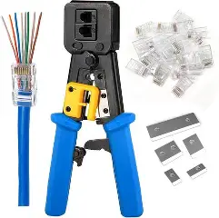
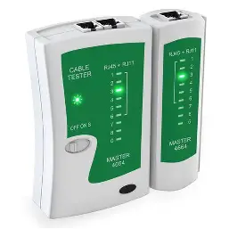
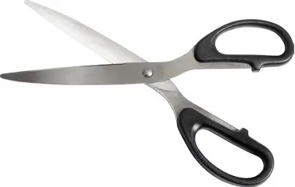

Internet Through Ethernet – PPT Discussion
This lesson introduces computer networking through Ethernet and Fiber Optic technologies. It discusses the basic concepts of networks, tools needed to build cables, different cable types, and the proper steps to create Ethernet and Fiber Optic connections.
1. What is a Network?
A network is a collection of technologies that allow computers to connect and communicate with one another. Through networks, devices can share files, data, resources, and internet access.
2. What is the Internet?
The Internet is communication between different networks worldwide. It is a global system of interconnected computer networks using standard protocols, making information accessible everywhere.
3. What is Ethernet?
Ethernet is a way of connecting computers within a Local Area Network (LAN). It is commonly used in homes, schools, and offices to enable communication between devices.
4. Components of Ethernet
- UTP Cable (Unshielded Twisted Pair) – Copper cable composed of twisted wire pairs.
- CAT5 – Supports up to 100 MHz and speeds up to 2.5 Gbps.
- CAT6 – Supports 250 MHz and speeds up to 10 Gbps.
- RJ45 Connector – Standard connector used for Ethernet cable ends.
- Ethernet Port – The socket on computers, routers, or switches where Ethernet cables are plugged.
5. Tools Used in Ethernet Setup
- Stripping Tool – Removes cable jackets.
- Crimping Tool – Attaches RJ45 connectors onto cables.
- LAN Tester – Checks if the Ethernet cable is working properly.
- Scissors – Used for cutting cable materials.
6. Types of Ethernet Cables
- Cross-over Cable – Connects two computers directly without a router.
- Straight-through Cable – Connects a computer to a router or switch.
Ethernet Cable Wire Colors
Below is a representation of the wire color order for each type:
7. Steps in Making an Ethernet Cable
- Cut the cable to the needed length.
- Strip off around 1 inch of the outer jacket.
- Untwist and arrange the wires in the correct order.
- Trim wires evenly.
- Insert the wires into the RJ45 plug.
- Crimp using the crimping tool.
- Test with a LAN tester.
8. Fiber Optic Cable
A fiber optic cable contains glass fibers inside a protective casing. It supports high-performance networking with extremely fast speeds and long-distance connections.
9. Components of Fiber Optic Setup
- SC Connector – A push-pull connector for fiber cables.
- Media Converter – Converts Ethernet signals to fiber signals.
5. Tools Used in Ethernet Setup
Stripping Tool
Removes cable jackets.

Crimping Tool
Attaches RJ45 connectors onto cables.

LAN Tester
Checks if the Ethernet cable is working properly.

Scissors
Used for cutting cable materials.
11. Steps in Fiber Cable Setup
- Cut the cable to the needed length.
- Strip the outer jacket.
- Strip the inner jelly jacket.
- Cleave the fiber thread using the fiber cleaver.
- Insert the fiber into the SC connector.
- Secure the connector.
- Test the cable using a fault locator.
12. Significance of the Topic
- Security – Networks enable secure data transfer.
- Life Skills – Learning networking prepares you for real-world tech use.
- Business – Companies rely heavily on networking and communication systems.